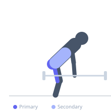

Exercise guide / Sumo Romanian Deadlift
Sumo Romanian Deadlift
A Romanian deadlift performed with a wide sumo stance and toes pointed out. This stance shifts loading emphasis to the adductors, inner hamstrings, and glutes compared to a conventional RDL, and allows a more upright torso while still training the hip hinge pattern under load.
Primary muscles
gluteus maximus
biceps femoris long head
adductor magnus
Secondary muscles
semitendinosus
erector spinae
gluteus medius
Stabilizers
transverse abdominis
adductor longus
Equipment
Standard Barbell
Optional
Dumbbell (Fixed)
Trap Bar (Hex Bar)


Starting position
- Stand with feet wider than shoulder-width, toes pointing outward at 30 to 45 degrees. Grip a barbell with a double-overhand grip, hands inside the knees.
Setup
- Set a barbell on a rack or start from the floor in a sumo stance. Feet wide, toes flared, bar over mid-foot.
Steps
- Step 1: Brace the core and hinge at the hips, keeping the knees in line with the toes.
- Step 2: Lower the bar along the inner thighs and legs, feeling the inner hamstrings and adductors stretch.
- Step 3: Once a strong stretch is felt through the posterior chain, drive the hips forward.
- Step 4: Extend the hips fully and squeeze the glutes at the top.
Coaching cues
- Push the knees out in line with the toes
- Feel the stretch in the inner hamstrings
Breathing
- Inhale and brace before hinging. Exhale on the drive to standing.
Range of motion
- Lower until a strong hamstring and inner thigh stretch is felt. Full hip extension at the top.
Tempo
- 3-0-2-0
Common mistakes
- Allowing the knees to cave inward during the movement
- Rounding the lower back at the bottom
Safety
- Ensure the knees track in line with the toes throughout the movement
Training
- strength: 3–8 reps
- hypertrophy: 8–15 reps
- strength: 3–5 sets
- hypertrophy: 3–4 sets
- Rest: {'strength': 180, 'hypertrophy': 90}